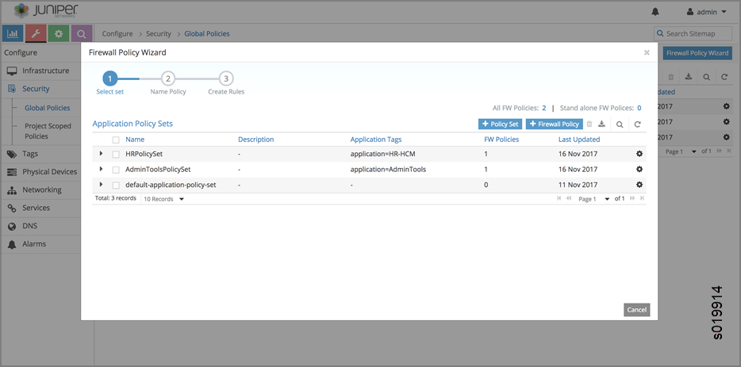
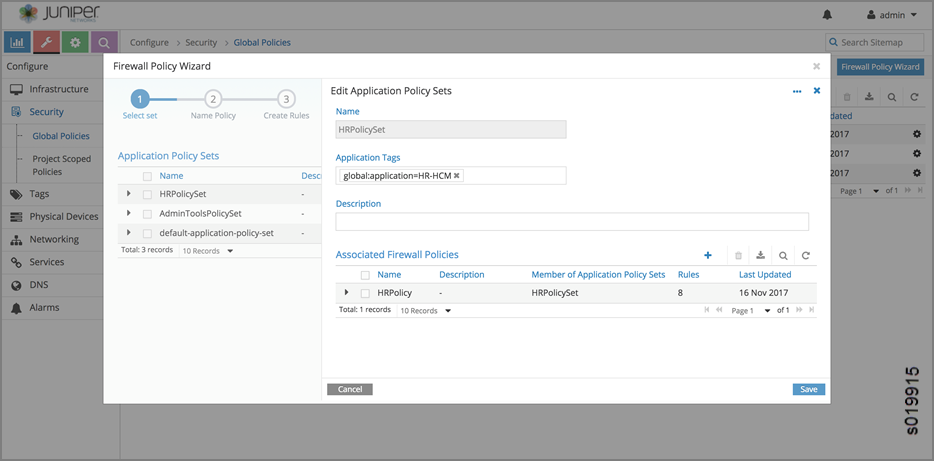
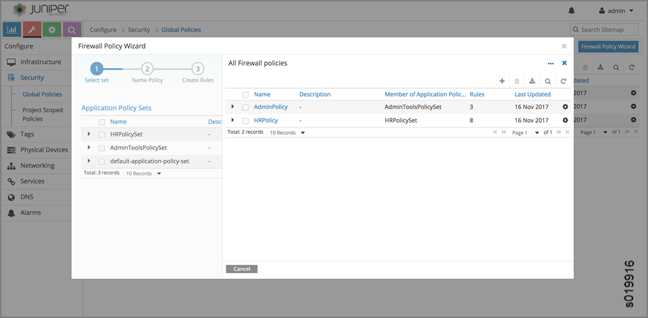

See Figure 4.


Contrail virtual networks are isolated by default. Workloads in a virtual network cannot communicate with workloads in other virtual networks, by default. A Contrail network policy may be used to connect two virtual networks. In addition, Contrail network policy also provides security between two virtual networks by allowing or denying specified traffic.
In modern cloud environments, workloads are moving from one server to another, one rack to another and so on. Therefore, users must rely less on using IP addresses or other network coordinates to identify the endpoints to be protected. Instead users must leverage application attributes to author policies, so that the policies don't need to be updated on account of workload mobility.
You might want to segregate traffic based on the different categories of data origination, such as:
Protecting the application itself
Segregating traffic for specific component tiers within the application
Segregating traffic based on the deployment environment for the application instance
Segregating traffic based on the specific geographic location where the application is deployed
There are many other possible scenarios where traffic needs to be segregated.
Additionally, you might need to group workloads based on combinations of tags. These intents are hard to express with existing network policy constructs or Security Group constructs. Besides, existing policy constructs leveraging the network coordinates, must continually be rewritten or updated each time workloads move and their associated network coordinates change.
As the Contrail environment has grown and become more complex, it has become harder to achieve desired security results with the existing network policy and security group constructs. The Contrail network policies have been tied to routing, making it difficult to express security policies for environments such as cross sectioning between categories, or having a multi-tier application supporting development and production environment workloads with no cross environment traffic.
Starting with Contrail Release 4.1, limitations of the current network policy and security group constructs are addressed by supporting decoupling of routing from security policies, multidimension segmentation, and policy portability. This release also enhances user visibility and analytics functions for security.
Contrail Release 4.1 introduces new firewall security policy objects, including the following enhancements:
Routing and policy decoupling—introducing new firewall policy objects, which decouples policy from routing.
Multidimension segmentation—segment traffic and add security features, based on multiple dimensions of entities, such as application, tier, deployment, site, usergroup, and so on.
Policy portability—security policies can be ported to different environments, such as ‘from development to production’, ‘from pci-complaint to production’, ‘to bare metal environment’ and ‘to container environment’.
Visibility and analytics
Starting with Contrail Release 4.1, tags and configuration objects are used to create new firewall policy objects that decouple routing and network policies, enabling multidimension segmentation and policy portability.
Multidimension traffic segmentation helps you segment traffic based on dimensions such as application, tier, deployment, site, and usergroup.
You can also port security policies to different environments.
Portability of policies are enabled by providing match conditions
for tags. Match tags must be added to the policy rule to match tag
values of source and destination workloads without mentioning tag
values. For example, in order for the ‘allow protocol
tcp source application-tier=web destination application-tier=application
match application and site’ rule to take effect,
the application and site values must match.
You can choose predefined tags based on the environment and deployment requirements.
Predefined tags include:
application
application-tier
deployment
site
label (a special tag that allows the user to label objects)
You can also define custom tags for a Kubernetes environment. You can define tags in the UI or upload configurations in JSON format.
application = HRApp application-tier = Web site
= USA
A user can tag the objects project, VN, VM, and VMI with tags and values to map their security requirements. Tags follow the hierarchy of project, VN, VM and VMI and are inherited in that order. This gives an option for the user to provide default settings for any tags at any level. Policies can specify their security in terms of tagged endpoints, in addition to expressing in terms of ip prefix, network, and address groups endpoints.
Policy application is a new object, implemented by means of the application tag. The user can create a list of policies per application to be applied during the flow acceptance evaluation. Introducing global scoped policies and project scoped policies. There are global scoped policies, which can be applied globally for all projects, and project scoped policies, which are applied to specific projects.
The following are the configuration objects for the new security features.
firewall-policy
firewall-rule
policy-management
application-policy
service-group
address-group
tag
global-application-policy
Each configuration object tag object contains:
tag: one of the defined tag types, stored as string and a 32-bit ID.
tag type: Contains the type string and ID (the first 16 bits of the tag) and references to the tag resource type
Each value entered by the user creates a unique ID that is set in the tag_id field. The system can have up to 64 million tag values. On average, each tag can have up to 2k values, but there are no restrictions per tag.
Tags and labels can be attached to any object, for example, project, VN, VM, VMI, and policy, and these objects have a tag reference list to support multiple tags.
RBAC controls the users allowed to modify or remove attached tags. Some tags (typically facts) are attached by the system by default or by means of introspection.
Tag APIs are used to give RBAC per tag in any object (VMI, VM, Project ….).
REST: HTTP POST to /set_tag_<tag_type>/<obj_uuid>
Python: set_tag_<tag_type> (object_type,
object_uuid, tag_value)
Configuration also supports the following APIs:
tag query
tags (policy)
tags (application tag)
object query
tags (object)
tags (type, value)
Label is special tag type, used to assign labels for objects. All of the tag constructs are valid, except that tag type is ‘label'. One difference from other tags is that an object can have any number of labels. All other tag types are restricted to one tag per object.
Tags can be defined globally or locally under a project; tag objects are children of either config-root or a project. An object can be tagged with a tag in its project or with a globally-scoped tag.
When given a tag query with a SQL where clause and select clause, analytics should give out objects. The query can also contain labels, and the labels can have different operators.
Example:
User might want to know: a list of VMIs where ’site
== USA and deployment == Production'
list of VMIs where ’site == USA and deployment
== Production has ’
Given tag SQL where clause and select clause, analytics should give out flows.
The control node passes the tags, along with route updates, to agents and other control nodes.
Agent gets attached tags along with configuration objects. Agent also gets route updates containing tags associated with IP route. This process is similar to getting security group IDs along with the route update.
There are multiple ways to add IP address to address-group.
Manually add IP prefixes to the address-group by means of configuration.
Label a work load with the address-group’s specified label. All ports that are labelled with the same label are considered to be part of that address-group.
Use introspect workloads, based on certain criteria, to add ip-address to address-group.
The address-group object refers to a label object, description, and list of IP prefixes. The label - object is created using the tag APIs.
Agent gets address-group and label objects referenced in policy configuration. Agent uses this address group for matching policy rules.
When given address group label, analytics gets all the objects associated with it. Given address group label, get all the flows associated with it.
Configuration
The service-group contains a list of ports and protocols. The open stack service-group has a list of service objects; the service object contains attributes: id, name, service group id, protocol, source_port, destination_port, icmp_code, icmp_type, timeout, tenant id.
Agent
Agent gets service-group object as it is referred to in a policy rule. Agent uses this service group during policy evaluation.
The application-policy-set configuration object can refer to a tag of type application, network-policy objects, and firewall-policy objects. This object can be local (project) or globally scoped.
When an application tag is attached to an application-policy-set object, the policies referred by that object are automatically applied to the ports that have the same application tag.
Any firewall-policies referred by the application-policy-set objects are ordered using sequence numbers. If the same application tag is attached to multiple application-policy-sets, all those sets will apply, but order among those sets is undefined.
One application-policy-set (called default-policy-application-set) is special in that policies referred by it are applied to all interfaces by default, after applying policies referred to other application-policy-sets.
Upon seeing the application tag for any object, the associated policies are sent to agent. Agent will use this information to find out the list of policies to be applied and their sequence during flow evaluation. User can attach application tag to allowed objects (Project, VN, VM or VMI).
Policy-management is a global container object for all policy-related configuration.
Policy-management object contains
network-policies (NPs)
firewall-policies (FWPs)
application-policy-sets
global-policy objects
global-policy-apply objects
NPs - List of contrail networking policy objects
FWPs - List of new firewall policy objects
Application-policies - List of Application-policy objects
Global-policies - List of new firewall policy objects, that are defined for global access
Global-policy-apply - List of global policies in a sequence, and these policies applied during flow evaluation.
Network Policies (NP) references are available, as they are today.
Firewall-policy is a new policy object
that contains a list of firewall-rule-objects and audited flag. Firewall-policy
can be project or global scoped depending on usage. Includes an audited
Boolean flag to indicate that the owner of the policy indicated that
the policy is audited. Default is False, and will have to explicitly
be set to True after review. Generates a log event for audited with
timestamp and user details.
Firewall-rule is a new rule object, which contains the following fields. The syntax is to give information about their layout inside the rule.
<sequence number>
There is a string
object sequence number on the link from firewall-policy to firewall-policy-rule
objects. The sequence number decides the order in which the rules
are applied.
[< id >]
uuid
[name < name >]
Unique name selected by user
[description < description >]
public
{permit | deny}
[ protocol {< protocol-name > | any } destination-port { < port range > | any } [ source-port { < port range > | any} ] ] | service-group < name >
endpoint-1 { [ip < prefix > ] | [virtual-network < vnname >] | [address-group < group name >] | [tags T1 == V1 && T2 == V2 … && Tn == Vn && label == label name...] | any}
{ -> | <- | <-> }
Specifies connection direction. All the rules are connection oriented and this option gives the direction of the connection.
endpoint-2 { [ip < prefix > ] | [virtual-network < vnname >] | [address-group < group name >] | [tags T1 == V1 && T2 == V2 … && Tn == Vn && label == label name...] | any }
Tags at endpoints support an expression of tags. We support only ‘==‘ and ‘&&’ operators. User can specify labels also as part the expression. Configuration object contains list of tag names (or global:tag-name in case of global tags) for endpoints.
[ match_tags {T1 …. Tn} | none} ]
List of tag types or none. User can specify either match with list of tags or none. Match with list of tags mean, source and destination tag values should match for the rule to take effect.
[ log| mirror | alert | activate | drop | reject | sdrop ]
complex actions
{ enable | disable }
A boolean flag to indicate the rule is enabled or disabled. Facilitates selectively turn off the rules, without remove the rule from the policy. Default is True.
filter
Whenever the API server receives a request to create/update a firewall policy rule object, it analyzes the object data to make sure that all virtual-networks, address-group, tag objects exist. If any of them do not exist, the request will be rejected. In addition, it will actually create a reference to those objects mentioned in the two endpoints. This achieves two purposes. First, we don't allow users to name non-existent objects in the rule and second, the user is not allowed to delete those objects without first removing them from all rules that are referring to them.
See Figure 4.
You can use the Contrail web user interface to create and manage the tags used to provide granularity to security policies. You can have global tags, applicable to the entire system, or project tags, defined for specific uses in specific projects.
From Configure > Security > Global Policies, in addition to viewing the policies includes in application policy sets, you can also view all firewall policies, all service groups policies, and all address groups policies.

Use Monitor > Security > Traffic Groups to explore visual representations of how policies are applied to traffic groups. See Figure 10, which is a visual representation of the source and destination traffic for the past one hour of a traffic group named Traffic Groups. The outer circle represents traffic tagged with application, deployment, or project. The inner circle represents traffic tagged with tier. The center of the circle shows the traffic origination and destination.

You can click in the right side of the screen to get details of the policy rules that have been matched by the selected traffic. See Figure 11.
You can click in the right side of the screen to get to the Settings window, where you can change the type of view and change which items appear in the visual representation. See Figure 12.

You can click on the name of a policy that has been matched to view the endpoint statistics, including source tags and remote tags, of the traffic currently represented in the visual. See Figure 13.
You can click deeper through any linked statistic to view more details about that statistic, see Figure 15 and Figure 15.
You can change the settings of what statistics are displayed in each traffic group at the Traffic Groups Settings screen see Figure 16.